Selected work · Floodplain analysis
Duffins Creek winds from forest and farmland in the north down into new subdivisions in the south. I built a model of the watershed from raw data to see how far the creek spreads when a big flow comes through.
Scroll to follow the story ↓
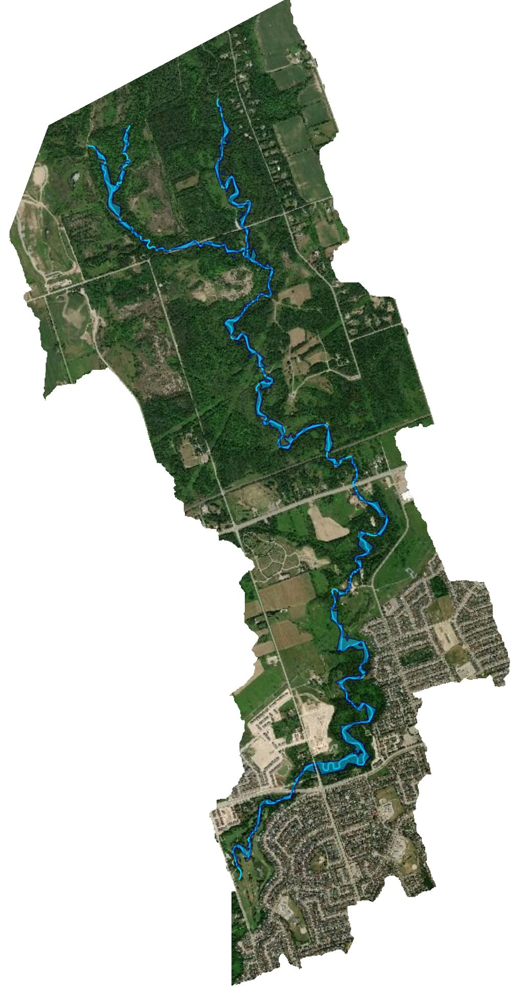
01 · The setting
Duffins Creek sits in the northeast corner of the Toronto and Region Conservation Authority area and crosses seven municipalities. Most of it is still rural, but the south is filling in with new homes.
02 · The question
If a big flow comes down this creek, where does the water go, and how close does it get to the houses?
03 · Building the model
I built the model in four stages. Each stage fed the next.
Stage 1 of 4 · Data
I pulled together public data from several sources:
The chart shows the 2015 stream record. The circled storm in late June became my test event.
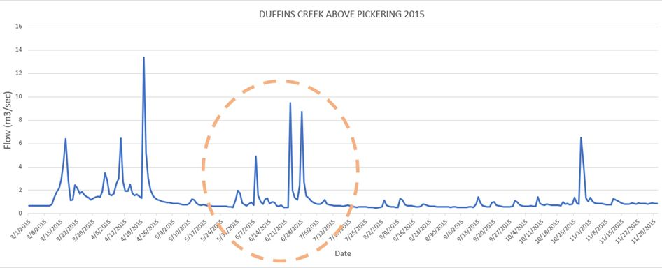
Stage 2 of 4 · Watershed delineation
Using Arc Hydro in ArcMap, I filled sinks, computed flow direction and flow accumulation, defined the streams and split the watershed into catchments.
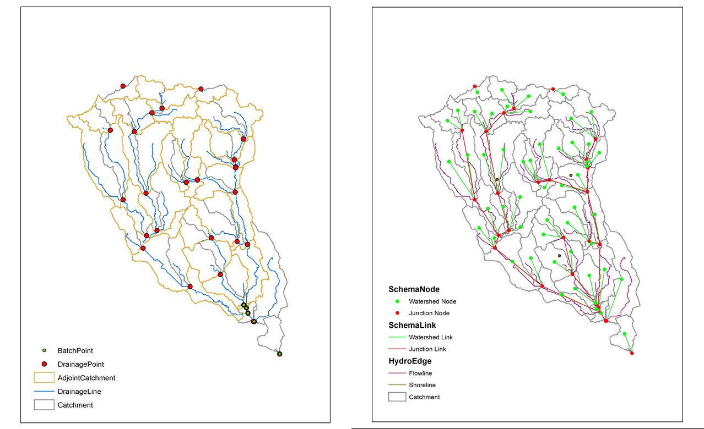
Stage 2 of 4 · Watershed delineation
The result was six subwatersheds. Their boundaries lined up with the TRCA's published subwatershed map, with only small differences that come from the DEM resolution.
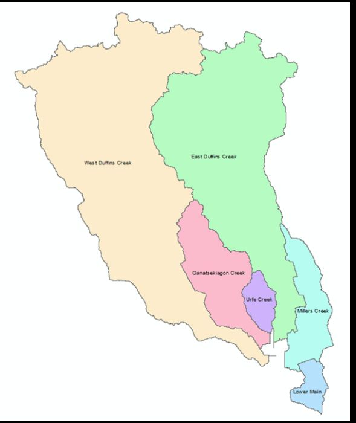
Stage 3 of 4 · Hydrology
I merged the soil and land use layers into a curve number grid. The grid scores every cell by how much of its rain turns into runoff.
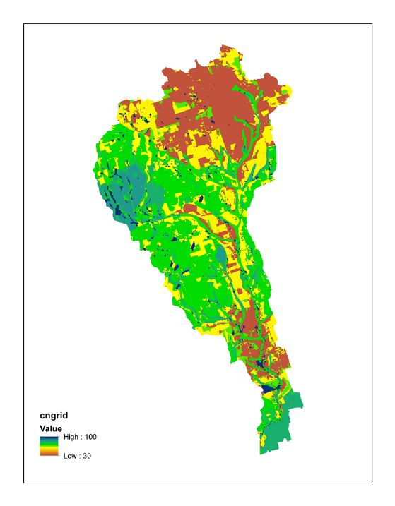
Stage 3 of 4 · Hydrology
I built the basin model in HEC-GeoHMS and ran it in HEC-HMS:
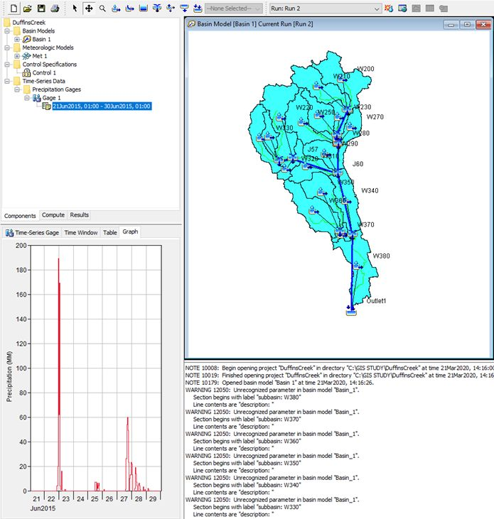
Stage 4 of 4 · Hydraulics
In HEC-GeoRAS, I digitized the river centreline, banks, flow paths and cross-sections on the terrain, then exported the geometry to HEC-RAS.
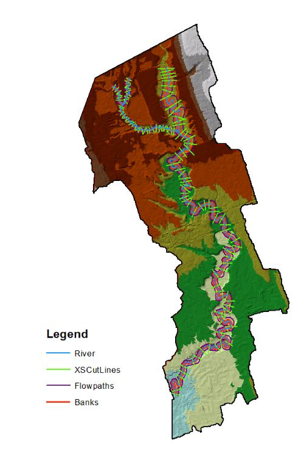
Stage 4 of 4 · Hydraulics
I ran a steady-flow model with these settings:
The cross-section shows how shallow the channel is. That detail matters later.
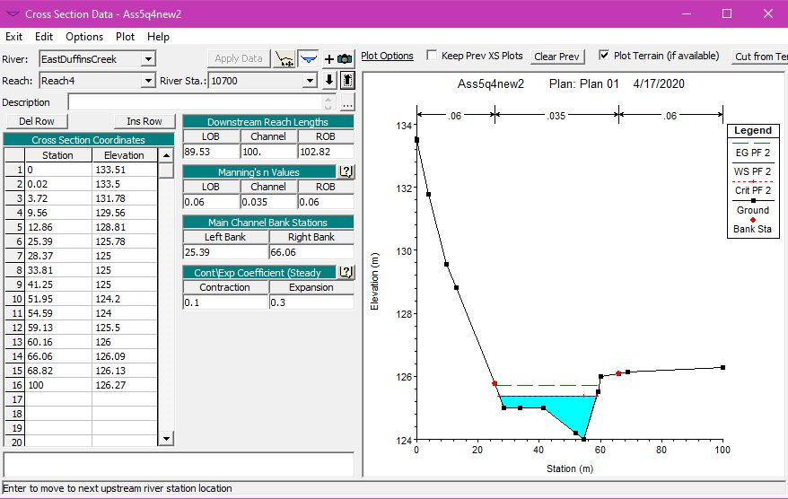
04 · The twist
My HEC-HMS hydrograph caught the same two storm peaks as the stream gauge, on June 23 and June 28. The flow values, however, were too far off to drive the flood model.
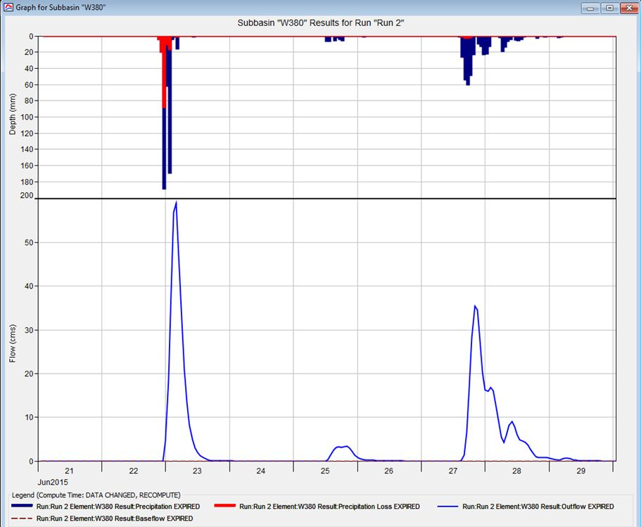
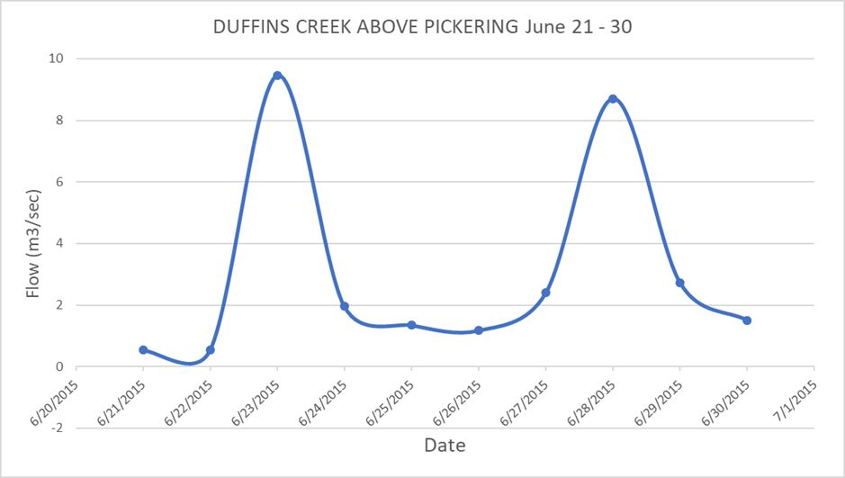
The cause was the inputs. There was no active rain gauge inside the study area, and the elevation data was coarse for a creek this shallow.
Rather than push weak numbers into the hydraulic model, I used the recorded peak flows from the stream gauge instead.
A model is only as good as its inputs. When the inputs are thin, use the measured data you trust.
05 · Two floods
I ran two recorded peak flows through the hydraulic model. Drag the slider across the map to compare them.
Most of the flow stays inside the banks across the study area.
Most of the flow spills over the banks. The shallow channel cannot hold it, which also means more erosion and sediment movement.
For scale: from the gauge record, 95% of daily flows are below this. Both events are far above it, and the 1984 flow happened only once in the record.
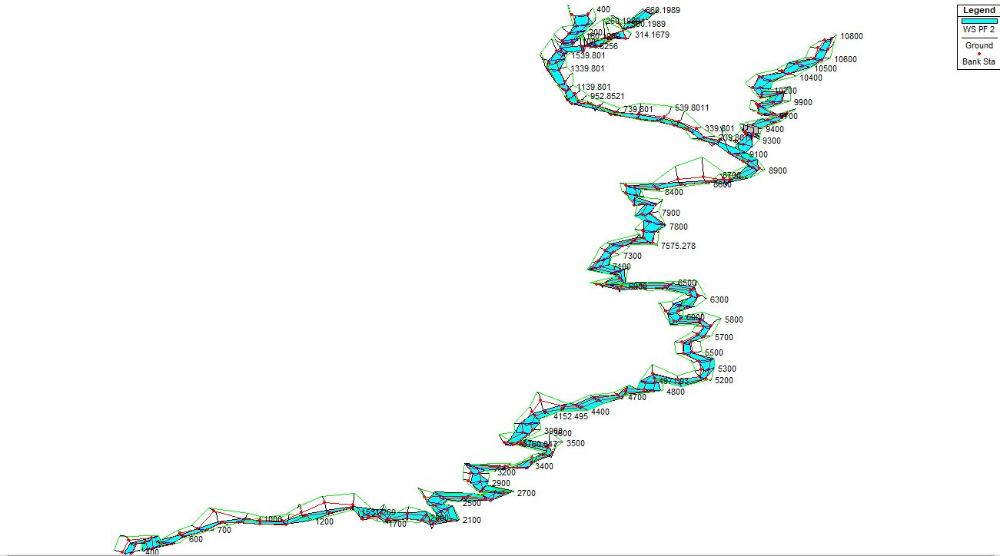
06 · Downstream
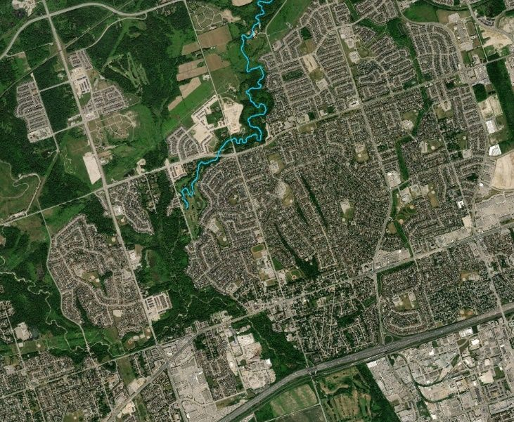
In the model, the water does not reach the houses. In the south of the study area, however, it comes very close.
The model also assumes today's land cover. The south of the watershed is still growing, and storms are getting more intense. More pavement means more runoff, so the homes near the creek are likely to see more flooding than this map shows.
That is why updated floodplain maps matter: they show planners where not to build before the houses go up.
07 · What I would do next
Use the regulatory event, the greater of Hurricane Hazel and the 100-year storm, with IDF-based design storms instead of only recorded flows.
The creek passes under several bridges. Modelling them would show where they back water up.
Separating baseflow from storm runoff would show the true water level rise from each storm.
A higher resolution DEM would capture this shallow channel much better.
Tools used
I am happy to walk through any step of this model, from the data to the flood maps.